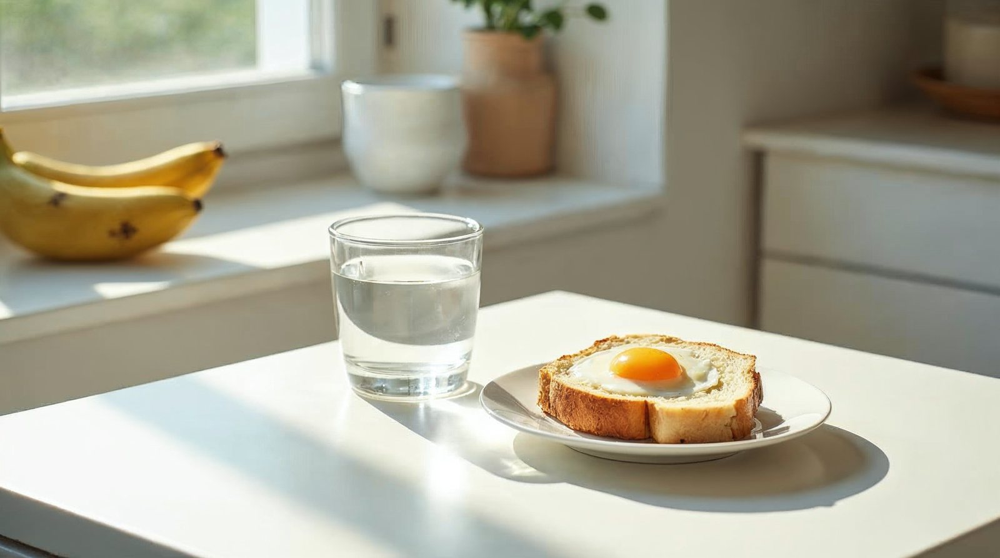
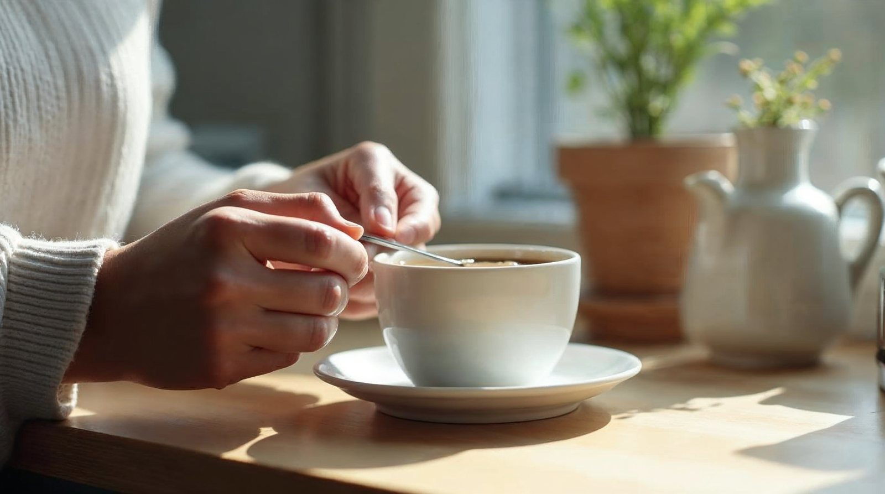
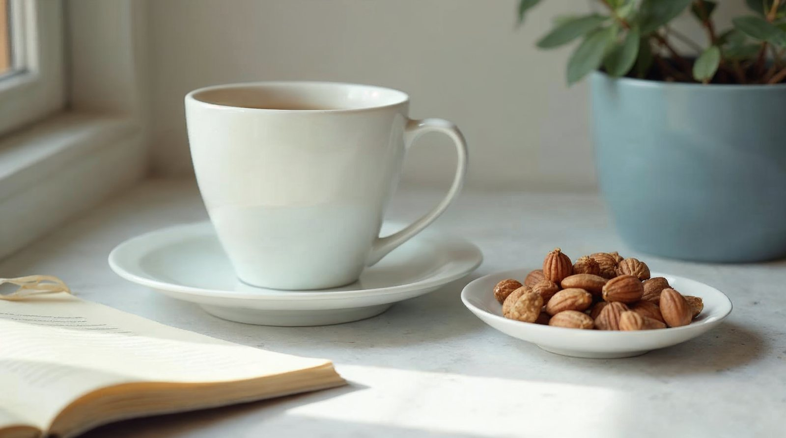

이종호 한의사 감수좋은꿈참사랑한의원 대표원장 (한의사 면허번호 19769)발행 2026-11-22 · 수정 2026-11-26
이 글의 차례
- 왜 이런 불편이 생길 수 있나요
- 먼저 이렇게 여쭙니다
- 일상에서 먼저 해 볼 수 있는 것
- 카페인은 이렇게 정해 보세요
- 상황별 예시
- 스스로 점검해 보세요
- 시험 날 아침 메뉴는 어떻게 고르면 될까요?
- 왜 연습해 둔 아침이 시험 날 도움이 될까요
- 시험 시각에 맞춘 아침 흐름 예시
- 연습한 날은 이렇게 기록해 보세요
- 전날 저녁은 아침을 위해 어떻게 준비할까요?
- 시험장에 도착한 뒤에는 어떻게 지낼까요?
- 카페인 대신 졸음을 깨우는 방법은 무엇일까요?
- 수험생을 챙기는 가족은 무엇을 도우면 될까요?
- 평소 아침을 먹지 않는 분은 어떻게 시작할까요?
- 영양제나 보양식은 시험 날 먹어도 될까요?
- 오후 시험이 있는 날 점심은 어떻게 할까요?
- 한의원에서 함께 살필 수 있는 경우
- 이렇게 기록해 오시면 상담이 쉬워집니다
- 얼마나 지켜보고 언제 상담할까요
- 이런 증상은 먼저 확인이 필요합니다
- 함께 읽으면 좋은 글
시험 날 아침의 원칙은 새로운 것 없이 평소 먹어 본 것만 먹는 것입니다. 그날은 긴장으로 입맛이 없거나 속이 불편한 경우가 많아서, 무엇을 얼마나 먹을지 미리 정해 두면 당일의 걱정이 줄어듭니다.
노량진에서 혼자 시험을 준비하는 분은 평소 아침을 거르고 커피 한 잔으로 강의실에 들어가는 날이 많아, 시험 날에도 같은 습관이 이어지기 쉽습니다. 시험장이 낯선 곳이라 이동 시간이 길어지면 아침을 먹을 여유는 더 줄어듭니다.
시험 날 아침은 그날 새로 정하는 것이 아니라, 2~3주 전부터 연습해 둔 메뉴와 시각을 그대로 옮기는 날이라고 생각해 두면 편합니다.
왜 이런 불편이 생길 수 있나요
- 긴장하면 위장의 움직임이 달라져 입맛이 없거나, 반대로 속이 쓰리고 화장실에 자주 가고 싶어질 수 있습니다.
- 빈속에 커피를 마시면 속 쓰림이나 손 떨림, 두근거림이 더 크게 느껴지는 분이 있습니다.
- 평소 먹지 않던 음식을 시험 날 처음 먹으면 소화가 예상과 달라 불편할 수 있습니다.
- 전날 잠을 설치면 아침 입맛이 떨어지고 카페인에 더 기대고 싶어지는 경우가 많습니다.
- 카페인에 대한 반응은 사람마다 차이가 크고, 같은 사람도 잠이 부족하거나 긴장한 날에는 두근거림이나 손 떨림을 더 크게 느낄 수 있습니다.
먼저 이렇게 여쭙니다
- 평소 아침 식사를 하는 편인가요?
- 커피나 차를 마시면 속이 쓰리거나 가슴이 뛰는 편인가요?
- 긴장하면 속이 더부룩해지거나 설사를 하나요?
- 시험 시간은 몇 시부터 몇 시까지인가요?
- 평소 어떤 음식을 먹으면 속이 편한지 알고 있나요?
- 복용 중인 약이나 영양제가 있나요?

일상에서 먼저 해 볼 수 있는 것
- 평소 먹어 본 소화가 쉬운 음식으로 가볍게 먹기
- 카페인은 평소 마시던 양을 넘기지 않기
- 물은 조금씩 나누어 마시고, 시험 직전에 한꺼번에 많이 마시지 않기
- 시험 2~3주 전 모의고사 날을 연습 삼아 같은 아침 식사와 같은 시각의 커피를 미리 해 보기
- 커피는 빈속보다 무엇이든 조금 먹은 뒤에 마시기
- 시험장에 가져갈 물과 간식은 전날 밤에 미리 챙겨 두기
- 아침 식사 시각은 시험 시작 2시간쯤 전으로 잡아 소화할 여유 두기
- 시험장까지 가는 길에 사 먹을 계획이라면 평소 먹어 본 메뉴인지 미리 확인하기

카페인은 이렇게 정해 보세요
- 카페인 양은 커피 종류와 컵 크기, 차·초콜릿·에너지 음료에 따라 많이 달라, 아래 권고량을 넘지 않는 범위에서 평소 마셔도 속과 가슴이 편했던 양을 기준으로 삼아 보세요.
- 식약처는 하루 카페인 섭취 권고량을 성인은 400mg 이하, 청소년은 체중 1kg당 2.5mg 이하(체중 50kg이면 약 125mg)로 안내합니다. 이 기준 안에서도 사람에 따라 훨씬 적은 양에 두근거림이나 잠 방해가 올 수 있습니다.
- 카페인은 몸에서 빠지는 데 몇 시간이 걸려, 시험 전날 오후 늦게 마신 커피가 밤잠에 남을 수 있습니다. 전날은 평소보다 이른 시각에 마지막 잔을 마시도록 안내하는 경우가 많습니다.
- 평소 커피를 마시지 않던 분이 시험 날 처음 마시거나, 평소보다 진하게 마시는 것은 피하도록 안내합니다.
- 두통약이나 감기약 가운데 카페인이 들어 있는 것도 있으니, 복용 중인 약은 먼저 알려 주세요.
상황별 예시
- 예를 들어 평소 아침을 거르고 빈속에 아메리카노를 마시며 강의를 듣던 수험생이라면, 시험 2~3주 전부터 평소 먹어 본 바나나나 죽, 식빵처럼 소화가 쉬운 음식을 조금 먹은 뒤 커피를 마시는 순서로 바꿔 연습해 보도록 안내합니다.
- 예를 들어 긴장하면 아침마다 배가 아파 화장실을 자주 찾는 경우라면, 시험장 도착 시각을 넉넉히 잡고 아침 식사 뒤 화장실 갈 시간을 미리 비워 두며, 기름진 음식이나 우유처럼 평소 배가 불편했던 음식은 빼고 메뉴를 정해 봅니다.
- 예를 들어 시험을 앞둔 자녀의 아침을 챙기는 가족이라면, 시험 날이라고 특별한 보양식을 준비하기보다 평소 먹던 메뉴를 평소 시각에 차려 주는 것이 속을 편하게 두는 데 도움이 될 수 있습니다.
스스로 점검해 보세요
- 모의고사 날 아침 메뉴와 시각을 미리 연습해 보았나요?
- 빈속에 커피를 마시는 날이 많나요?
- 커피를 마신 뒤 두근거림, 손 떨림, 속 쓰림이 오는 편인가요?
- 오후 늦게 마신 커피 때문에 잠들기 어려웠던 적이 있나요?
- 긴장하면 설사나 복통이 먼저 오나요?
- 시험장까지 가는 시간과 화장실 갈 시간을 계산해 두었나요?
- 복용 중인 약이나 영양제에 카페인이 들어 있는지 확인해 보았나요?
- 시험 날 아침 메뉴를 이미 정해 두었나요?
시험 날 아침 메뉴는 어떻게 고르면 될까요?
첫째 기준은 평소 먹어 보고 속이 편했던 음식인지입니다. 아무리 몸에 좋다고 알려진 음식이라도 처음 먹는 것이라면 그날은 고르지 않습니다.
둘째는 기름지거나 맵지 않고 양이 지나치지 않은지입니다. 튀김이나 기름진 볶음, 매운 국물은 소화에 시간이 걸려 오전 내내 속이 무겁게 느껴질 수 있습니다. 평소 양의 7~8할 정도만 먹는다고 생각하면 편합니다.
셋째는 밥이나 빵 같은 곡류에 달걀, 두부처럼 소화가 무난한 단백질을 조금 곁들이는 구성입니다. 단 음료나 과자만으로 아침을 때우면 오전 중간에 허기와 졸음이 함께 몰려오는 분이 있습니다.
따뜻한 국이나 미지근한 물을 곁들이면 찬 음식보다 속이 편하다는 분이 많습니다. 다만 국물을 많이 마시면 시험 중 화장실이 걱정될 수 있어 양은 조금만 두세요.
왜 연습해 둔 아침이 시험 날 도움이 될까요
몸은 되풀이되는 시각에 맞춰 배고픔과 배변 신호를 준비하는 경향이 있습니다. 같은 시각에 같은 메뉴를 몇 번 먹어 보면 시험 날 아침에도 위장이 덜 낯설어하고, 화장실 가는 시각도 어느 정도 예상할 수 있게 됩니다.
또 연습을 해 두면 무엇을 먹을지 고민하는 일 자체가 줄어듭니다. 시험 날 아침에 작은 결정 하나라도 덜어 두는 것이 긴장을 낮추는 데 보탬이 됩니다.
시험 시각에 맞춘 아침 흐름 예시
예를 들어 오전 9시에 시험이 시작되는 경우라면, 6시 전후에 일어나 물 한 잔을 마시고 6시 30분 무렵 아침을 먹는 흐름을 생각해 볼 수 있습니다. 식사와 시험 사이에 두 시간 넘는 여유가 생겨, 소화가 한숨 돌린 상태로 시험을 시작하기 좋습니다.
커피를 마신다면 식사 뒤에 평소 양만큼 마시고, 시험장 도착 전 마지막으로 화장실에 갈 시각을 정해 둡니다. 시험장에 도착한 뒤에는 물을 조금씩만 마시며 기다립니다.
쉬는 시간 간식은 한 입 크기로 나눠 두면 허기가 질 때 꺼내 먹기 좋습니다. 점심을 시험장에서 먹어야 한다면 이것도 평소 먹어 본 메뉴로, 아침보다 조금 가볍게 정해 두세요.
연습한 날은 이렇게 기록해 보세요
모의고사나 실전 연습을 한 날에는 일어난 시각, 먹은 메뉴와 양, 커피 시각, 시험 시작 무렵 속의 느낌, 오전 중간의 허기와 졸음, 화장실에 간 횟수를 짧게 적습니다.
두세 번 기록이 모이면 어떤 메뉴에서 속이 편했고 어떤 날 집중이 흐트러졌는지 비교할 수 있습니다. 가장 편했던 날의 조합을 시험 날 계획으로 그대로 옮기면 됩니다.
전날 저녁 메뉴와 잠든 시각도 한 줄 덧붙여 두세요. 아침 속이 불편했던 날을 거슬러 올라가 보면 늦은 야식이나 짧은 잠이 함께 있는 경우가 적지 않습니다.
전날 저녁은 아침을 위해 어떻게 준비할까요?
시험 날 아침 속이 편하려면 전날 저녁부터 가볍게 가는 것이 좋습니다. 기름진 고기나 매운 음식, 과식은 다음 날 아침까지 속을 무겁게 할 수 있어, 평소 먹던 집밥 정도로 잠들기 3시간 전쯤 마칩니다.
마지막 커피는 평소보다 이른 시각에 마시고, 저녁에는 물을 한꺼번에 많이 마시지 않도록 합니다. 밤에 화장실 때문에 깨면 아침 컨디션까지 흔들릴 수 있습니다.
아침에 먹을 음식은 전날 미리 정해 두고, 사야 할 것이 있으면 저녁에 준비해 둡니다. 시험장 근처에서 사 먹을 계획이라면 문을 여는 시각을 미리 확인해 두면 당일 아침이 덜 급해집니다.
시험장에 도착한 뒤에는 어떻게 지낼까요?
시험장에는 넉넉히 도착해 화장실 위치를 먼저 확인하고, 자리에 앉아 몸을 데웁니다. 겨울 시험장은 춥거나 덥기도 해 겉옷을 겹쳐 입고 가면 온도를 맞추기 쉽습니다.
쉬는 시간에는 간식을 조금 먹고 물을 한두 모금씩 마신 뒤, 자리에서 일어나 어깨와 허리를 가볍게 폅니다. 앞 교시 답을 맞춰 보는 대화는 속까지 긴장시킬 수 있어 다음 교시 준비에 마음을 두는 편을 권합니다.
카페인 대신 졸음을 깨우는 방법은 무엇일까요?
커피를 더 마시기 전에 몸을 먼저 깨워 보는 방법도 있습니다. 자리에서 일어나 2~3분 걷기, 찬물로 손과 얼굴 씻기, 창문을 열어 바깥 공기 쐬기는 카페인 없이 머리를 맑게 하는 데 도움이 될 수 있습니다.
아침에 커튼을 열고 햇빛을 보거나 시험장까지 일부러 조금 걸어가는 것도 몸이 깨어나는 신호가 됩니다. 졸음이 너무 잦다면 커피의 양보다 밤잠이 충분한지를 먼저 돌아보세요.
수험생을 챙기는 가족은 무엇을 도우면 될까요?
시험 날 아침은 가족도 긴장하기 쉽습니다. 평소와 같은 시각에 평소 먹던 메뉴를 차려 주고, 먹는 양이 적어도 다그치기보다 간식을 챙겨 보내는 쪽이 마음을 편하게 하는 데 도움이 됩니다.
청소년이라면 성인보다 카페인 권고량이 적어, 에너지 음료나 진한 커피를 사 두기보다 물과 평소 먹던 간식을 가방에 넣어 주세요.
평소 아침을 먹지 않는 분은 어떻게 시작할까요?
몇 년째 아침을 거른 분이 갑자기 밥 한 공기를 먹으면 오히려 속이 더부룩할 수 있습니다. 처음 며칠은 두유나 바나나, 작은 빵 한 조각처럼 아주 적은 양부터 시작해 보세요.
일주일쯤 지나 속이 익숙해지면 달걀이나 죽처럼 조금 든든한 것을 더해 갑니다. 아침을 먹는 시각을 날마다 비슷하게 맞추면 몸이 그 시각에 맞춰 배고픔을 준비하기 시작하는 경우가 많습니다.
영양제나 보양식은 시험 날 먹어도 될까요?
평소 먹지 않던 영양제나 보양식, 처음 마셔 보는 음료를 시험 날 처음 시도하는 것은 피하도록 안내합니다. 속이 예상과 다르게 반응할 수 있기 때문입니다. 이미 먹고 있는 것이 있다면 평소대로 두고, 무엇을 먹고 있는지는 상담 때 알려 주세요.
오후 시험이 있는 날 점심은 어떻게 할까요?
오전과 오후로 시험이 이어지는 날에는 점심이 오후 컨디션을 좌우하기 쉽습니다. 배부르게 먹으면 오후 첫 교시에 졸음이 몰려오고, 거르면 허기 때문에 집중이 흐트러질 수 있습니다.
평소 먹어 본 도시락을 아침보다 조금 가볍게 준비하고, 천천히 씹어 드세요. 식사 뒤에는 바로 앉아 있기보다 복도를 잠깐 걸으며 소화할 틈을 주면 오후 시험을 맞이하기가 한결 편해집니다.
한의원에서 함께 살필 수 있는 경우
- 시험 날 아침을 거르고 커피만 마시는 경우 식사와 카페인의 균형을 함께 살핍니다.
- 아침에 속이 더부룩하고 집중이 안 되는 경우 소화와 리듬을 함께 살핍니다.
- 카페인 때문에 밤에 잠이 얕은 경우 섭취 시간을 함께 정합니다.
- 긴장하면 설사나 복통이 반복되는 경우 장의 리듬과 긴장을 함께 살핍니다.
좋은꿈참사랑한의원에서는 먼저 식사와 배변의 흐름을 충분히 듣고, 진맥을 기본으로 하고 필요하다고 판단될 때 설진·복진을 더해 살핀 뒤 침이나 한약 상담 등 맞는 방법을 정합니다.
첫 방문에는 시험 날짜와 시험 시간, 평소 아침 식사와 커피 습관, 복용 중인 약과 영양제를 여쭌 뒤 진찰로 넘어가고, 오늘 할 치료와 이유를 먼저 설명해 드립니다. 한약 상담을 하는 경우에도 지금 드시는 약과 함께 먹어도 되는지부터 확인합니다.
귀가 전에는 시험 날까지 연습해 볼 아침 메뉴와 카페인 시각, 다음에 확인할 일을 알려 드립니다.

이렇게 기록해 오시면 상담이 쉬워집니다
- 모의고사나 연습한 날 먹은 아침 메뉴와 그날 속의 느낌
- 커피·차를 마신 시각과 양, 그 뒤의 두근거림이나 속 쓰림
- 긴장할 때 나타나는 배 증상(더부룩함, 설사, 복통)
- 복용 중인 약과 영양제
- 시험장에서 먹은 간식과 쉬는 시간마다 마신 물의 양
얼마나 지켜보고 언제 상담할까요
- 모의고사 날 같은 아침을 2~3번 연습해 보고, 그날 속과 집중이 어땠는지 적어 봅니다.
- 연습하는 동안 매번 속 쓰림이나 설사가 되풀이되면 시험 날을 기다리지 말고 미리 상담을 받아 보세요.
- 카페인을 줄였는데도 두근거림이 이어지면 병원에서 확인해 보시고, 가슴 통증이나 숨 가쁨이 함께 오면 기다리지 말고 가까운 응급실로 가세요.
이런 증상은 먼저 확인이 필요합니다
- 시험 때마다 심한 복통이나 구토가 이어지는 경우
- 카페인 뒤 가슴 두근거림이 심하거나 가슴 통증, 숨 가쁨, 어지러움이 함께 오는 경우
이런 신호가 있으면 한의원보다 가까운 병원이나 응급실을 먼저 찾으세요.
함께 읽으면 좋은 글
- 아침에 빈속에 커피를 마시면 속이 쓰릴 때는 어떻게 하나요?
- 카페인은 몇 시까지 마셔도 잠에 지장이 없을까요?
- 시험 전날 저녁은 어떻게 보내면 컨디션을 지키는 데 도움이 되나요?

여쭙는 것
- 평소 아침 식사를 하는 편인가요?
- 커피나 차를 마시면 속이 쓰리거나 가슴이 뛰는 편인가요?
- 긴장하면 속이 더부룩해지거나 설사를 하나요?
생활에서 해 볼 것
- 평소 먹어 본 소화가 쉬운 음식으로 가볍게 먹기
- 카페인은 평소 마시던 양을 넘기지 않기
- 물은 조금씩 나누어 마시고, 시험 직전에 한꺼번에 많이 마시지 않기
한의원에서 함께 살필 것
- 시험 날 아침을 거르고 커피만 마시는 경우 식사와 카페인의 균형을 함께 살핍니다.
- 아침에 속이 더부룩하고 집중이 안 되는 경우 소화와 리듬을 함께 살핍니다.
- 카페인 때문에 밤에 잠이 얕은 경우 섭취 시간을 함께 정합니다.
먼저 확인이 필요한 신호
- 시험 때마다 심한 복통이나 구토가 이어지는 경우
- 카페인 뒤 가슴 두근거림이 심하거나 가슴 통증, 숨 가쁨, 어지러움이 함께 오는 경우
한눈에 보는 표
| 구분 | 핵심 |
|---|---|
| 여쭙는 것 | 평소 아침 식사를 하는 편인가요? 커피나 차를 마시면 속이 쓰리거나 가슴이 뛰는 편인가요? |
| 생활에서 해 볼 것 | 평소 먹어 본 소화가 쉬운 음식으로 가볍게 먹기 카페인은 평소 마시던 양을 넘기지 않기 |
| 한의원에서 함께 살필 것 | 시험 날 아침을 거르고 커피만 마시는 경우 식사와 카페인의 균형을 함께 살핍니다. 아침에 속이 더부룩하고 집중이 안 되는 경우 소화와 리듬을 함께 살핍니다. |
| 먼저 확인이 필요한 신호 | 시험 때마다 심한 복통이나 구토가 이어지는 경우 카페인 뒤 가슴 두근거림이 심하거나 가슴 통증, 숨 가쁨, 어지러움이 함께 오는 경우 |
자주 묻는 질문
시험 날 아침을 굶어도 되나요?
사람마다 다르지만 속이 비면 집중이 어려운 분도 있어, 소화가 쉬운 가벼운 식사를 권하는 경우가 많습니다.
에너지 음료를 마셔도 되나요?
카페인과 당이 많아 두근거림이나 속 불편, 잠 방해가 올 수 있어, 시험 날은 물론 공부하는 동안에도 여러 캔을 이어 마시지 않도록 안내합니다. 청소년은 성인보다 카페인 권고량이 적다는 점도 기억해 주세요.
간식은 무엇이 좋나요?
평소 먹어 본 과일이나 견과류처럼 속이 편한 것을 소량 챙기도록 안내합니다.
시험 날 우유를 마셔도 되나요?
평소 우유를 마셔도 속이 편했다면 괜찮지만, 마신 뒤 배가 불편했던 적이 있다면 시험 날에는 피하고 평소 편했던 음식으로 정하는 것이 좋습니다.
긴장해서 아침이 전혀 넘어가지 않으면 어떻게 하나요?
한 끼를 다 먹으려 애쓰기보다 바나나 반 개나 따뜻한 물에 탄 미숫가루처럼 평소 먹어 본 것을 조금씩 나눠 드셔 보세요. 연습하는 날 미리 해 보면 시험 날 덜 당황합니다.
좋은꿈참사랑한의원은 재진 때 지난번 이야기부터 이어서 여쭙니다. 진료시간과 예약은 오시는 길에서 확인하세요.
어디서 상담받을 수 있나요?
좋은꿈참사랑한의원은 서울 동작구 만양로2길 2 신성빌딩 3층·5층(서울 동작구 상도동, 7호선 상도역 3번 출구 근처)에 있습니다. 한의사 3명(이종호 대표원장, 조영기 수석진료원장, 정원영 진료원장)이 진료합니다. 진료시간은 평일 09:30~20:00(점심 13:00~14:00), 토·일·공휴일 09:30~15:00이며, 방문 전 전화로 확인을 권합니다. 예약은 네이버 예약, 카카오톡 상담, 전화 02-815-7510로 받습니다.
이 글은 일반적인 건강 정보이며 개인의 진단이나 치료를 대신하지 않습니다. 증상이 있거나 복용 중인 약이 있다면 진료를 통해 확인하세요. 치료 효과는 개인마다 다를 수 있습니다.
작성 기준: 일반적으로 알려져 있는 건강 정보를 참고해 정리했습니다(대표원장 감수). 증상 기록은 1~2주 동안 하루 1회, 비슷한 시간에 적어 오시면 지난 상태와 비교하기 쉽습니다.